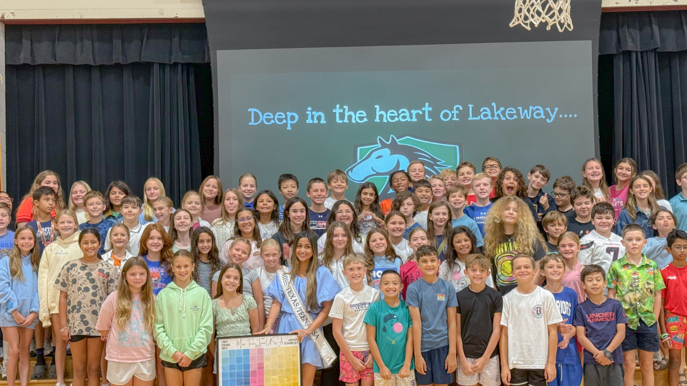

The Imagination Project builds critical thinking and creative confidence in students ages 4 to 18, and connects them with a community of adults who take their ideas seriously, so the next generation can use technology as a tool rather than a crutch.

As AI takes on more of the thinking that schools were built to develop, young people risk outsourcing the very habits that build judgment, creativity, and agency. We exist to rebuild that capacity directly, through mentorship, structured practice, real audiences, and access to people doing meaningful work in the world.
Our students do the hard thinking themselves, in front of a real audience, with real experts beside them, through pathways open to every family regardless of income or language.

We ask students to sit with hard questions longer than is comfortable, and to enjoy the work of figuring them out.
Our programs are designed so that the student's own responsibility, choices, and voice always come first.
Free multilingual resources and scholarship seats keep the door open wide, because talent is everywhere.
Our work is cross-national, multilingual, and interdisciplinary, so students learn well beyond a single point of view.
Our programs move from immediately available community offerings to long horizon international structures. Here is where we are now, and what is coming next.
Weekly small group sessions where four to six students explore a subject they chose together, building toward a capstone project of their own.
Free monthly cognitive challenges in English, Hindi, Spanish, and French, fully completable with paper and pen.
Monthly live workshops where working professionals show students how reason and creativity operate in their field.
The Policy Lab is our long term commitment to advocacy: starting in Texas and moving across states, we work toward clear AI disclosure in classrooms and a minimum of one day of real AI education for every student. In time, we intend to shape policy that protects human cognition for generations to come.
If cognitive agency is the defining feature of a fully realized human life, then its erosion is not only an educational problem. It is a civic one.

Every future leader is young today, and needs room to think, to question, and to build something real. That room is getting harder to find. The Imagination Project is how we protect it.
I founded The Imagination Project in 2025, the same month I was crowned Miss Texas Teen USA. Within four months I had written and delivered the Dear Future Leader curriculum to more than five hundred elementary students across Texas, and the accompanying children's book now funds literacy and hygiene programs for over eight hundred women served by Manav Sadhna in Ahmedabad, India. This is the model at the heart of our work: global impact through local action.
Laika Kalyani PatelFounder & Executive Director, The Imagination Project
Imagination is not a luxury.
It is how a child decides who they will become,
how they question what they are handed,
and how they build what does not yet exist.
Protect it, practice it, and it will carry them anywhere.
The Imagination Project
Our core programs serve students ages 4 to 18. High school students can also join as volunteer mentors, and adults eighteen and older are welcome as mentors, speakers, and supporters.
The Core Skills Lab and many of our resources are free and available in four languages. For programs with a fee, scholarship seats are reserved for students from under resourced communities, and livestream access to our events is always free.
Yes. We welcome mentors, speakers, and volunteers, and new mentors are recruited and announced each month. Reach us at contact@theimaginationproject.org to start a conversation.
Educators can deliver the Core Skills Lab in their classrooms, host volunteer events, and open The Imagination Project as a club. We provide classroom ready materials with minimal preparation and a responsive point of contact.
Donations of any size help us provide one on one mentorship and keep our resources free. You can also subscribe to our Substack, follow our work, and share it with people who care about how young people learn to think.